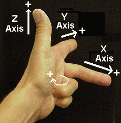
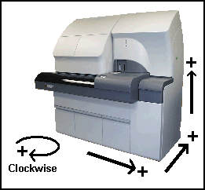

Left-Hand Rule
Application
The Left-Hand Rule is a method to standardize the orientation and motion direction for any instrument and involves these directions:
- Rotational motion
- Linear motion
- Mechanical adjustments
- Software alignments


Orientation and Direction Standards
| Fingers | Instrument Axis | Positive Axis |
|---|---|---|
| Middle | X (left and right) | Right |
| Index | Y (front and back) | Rearward |
| Thumb | Z (up and down) | Up |
| Curled | Rotational | Clockwise |
Applying the Rule
To use the left-hand rule to determine axis standardization, orient your left hand to the axis of the instrument:
- Make a gun shape with your left hand.
- Point the gun at the front of the instrument.
- Extend the middle finger of your left hand so that it is perpendicular to your index finger.
- Extend your thumb upward so it is perpendicular to your index finger.
- Wrap your other fingers into your palm.
Your fingers indicate the reference axis in the instrument, and they indicate the direction of a positive move of any device. This information is useful for knowing the direction to move a device when performing software adjustments or alignments.